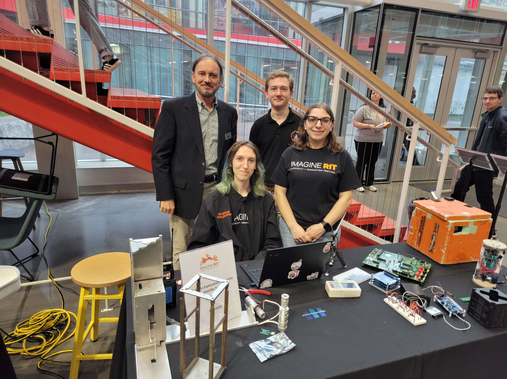
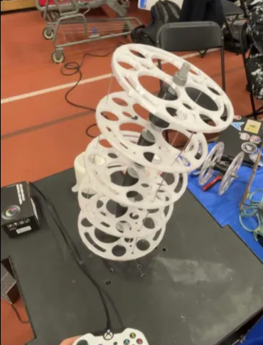

Projects

SPEX CubeSat
In Cubesat we were exploring radiation deflection methods in search of lighter and cheaper ways to protect electric components and astronauts. We were working on the design and construction of a small 1U Cubesat with several radiation sensors to prove mission success and get baseline data before expanding to a full research satellite. I served as payload lead organizing efforts to design custom radiation detectors that would integrate within the Cubesat.
As payload lead I made sure we were on-pace with the larger team. With little experience working with PCB design and radiation, I taught myself KiCad, elementary circuits, and the core concepts of radiation physics. Using this knowledge I trained my peers.
Photo 1) Cubesat at Imagine RIT
Photo 2) Scintillating and geiger counter run on Arduino

All Seeing Eye
The “All Seeing Eye” is a softbody robotics tentacle that uses computer vision to track and trace people as they pass.
While working on the Mechanical team we redesigned and rebuilt the entire arm and power system to reduce strain on the stepper motors and core.
This coming semester I will be working as co-lead and focsing on finishing the rebuilding the tentacle structure and integrate machine vision.
Photo 1) All Seeing Eye At Maker Fair
Photo 2) Testing new core
Photo 3) Old All Seeing Eye

Personal Website
This website is designed to showcase my projects from over the years.
I built the frontend with HTML and CSS, and the backend with Javascript.
I hope to add more detailed documentation of my projects with separate pages dedicated to each and add more personality.
Photo 1) Homepage Screenshot
Photo 2) Website code

Vex Over Under
Robot designed and built to compete in VEX's Over Under Challenge.
I served as co-lead and worked on CAD Model, Building, Coding, Notebook and was primary driver at competition.
We reached the semi finals in the State Competition.
The first iteration featured a four motor PTO, catapult, intake, sleds, and pneumatic “wings”.
The second iteration featured a band assisted elevation mechanism, a raised puncher, a pneumatic blocker, an intake, sleds, and wings.
Photo 1) Showcasing v1 with red LEDs
Photo 2) v2 about to start the autonomous period

Floating Wind Turbine
After passing several key climate change tipping points, now, more than ever, it is vital that we work to build clean and reliable energy sources. UMaine has organized efforts to implore students to create new methods of supporting wind turbines for further development in the gulf of Maine.
A group of friends and I decided to compete in UMaine's competition. We designed a spar styled wind turbine base. My work focused on creating several prototypes and learning hydrostatic fluid to find the optimal height, width, to weight ratio for maximum stability.
Photo 1) Wind turbine competing at UMaine's Windstorm Challenge
Photo 2) Wind Turbine Prototype
Photo 3) Getting ready for the competition!

VEX Spin Up
Robot designed to compete in VEX's Spin Up Challenge. First iteration featured ratcheting 3000 rpm 4” flywheel, top loading hopper, and intake.
Second iteration featured 3600 rpm 3” two stage flywheel, bottom loading hopper, intake, roller, string launcher, sleds, and custom odometry for position tracking.
I specialised in the intake and hopper system and string launcher.
Photo 1) Robot launching disls
Photo 2) Robot launchig string